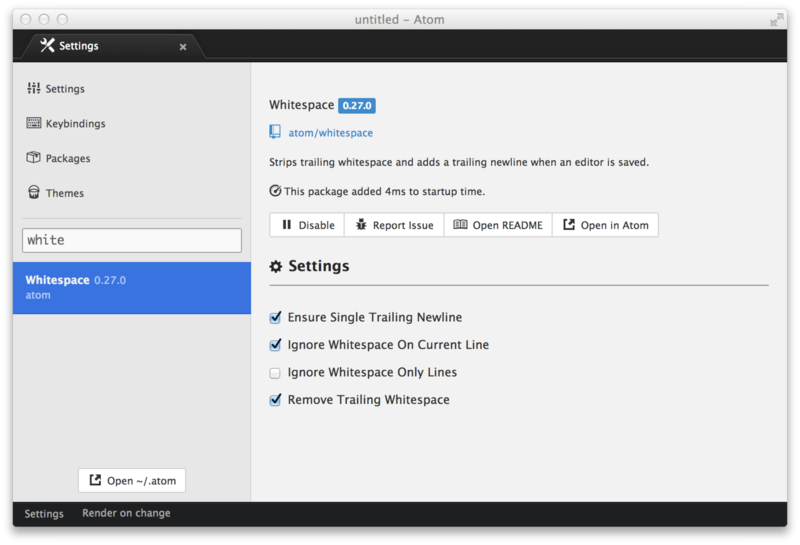
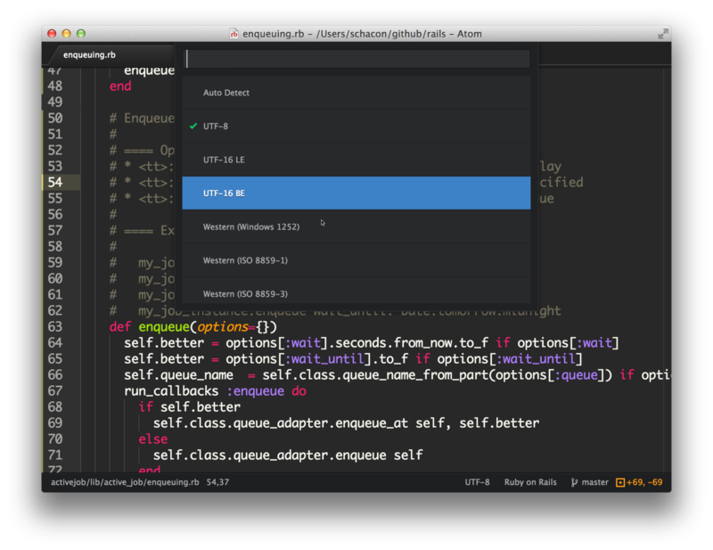

编辑和删除文本#
到目前为止，我们介绍了一些用于在文件中移动和选择区域的方法，现在让我们真正来修改一些文本吧。很显然你可以通过打字的方式来输入字符，但是有另一些方法使删除和处理字符变得更简捷易用。
基本操作
有一些用于基本操作的很酷的快捷键，他们十分易用。这些操作包括整行移动文本，整行复制，以及改变大小写。
ctrl-T
交换光标两边字符的位置
cmd-J
将下一行拼接到当前行的末尾
ctrl-cmd-up, ctrl-cmd-down
上移或者下移当前行
cmd-shift-D
复制当前行
cmd-K, cmd-U
将当前字符转为大写
cmd-K, cmd-L
将当前字符转为小写
Atom也带有一个功能，可以对段落重新排版，在超出提供的最大长度的地方硬换行（hard-wrap）。你可以对当前选中区域格式化，使用cmd-alt-Q，使其一行的长度不超过80个字符（或者editor.preferredLineLength设置为什么都可以）。如果没有选中任何东西，当前段落会被重排。
删除和剪切文本#
你也可以从你的缓冲区中剪切或删除文本。不要手下留情。
ctrl-shift-K
删除当前一行
cmd-delete
删除当前位置到整行末尾的内容（在mac中为cmd-fn-backspace）
ctrl-K
剪切当前位置到整行末尾的内容
cmd-backspace
删除当前位置到整行开头的内容
alt-backspace, alt-H
删除当前位置到单词开头的内容
alt-delete, alt-D
删除当前位置到单词末尾的内容
多光标选择#
Atom可以做的一件非常酷的事情，就是支持多个光标，开箱即用。这在处理一个很长的文本列表时会相当有用。
cmd-click
添加新的光标
cmd-shift-L
将一个多重选择变为多个光标
ctrl-shift-up, ctrl-shift-down
在当前光标之上或之下添加新的光标
cmd-D
选择文档中与当前所选的单词相同的下一个单词
ctrl-cmd-G
选择文档中与当前所选的单词相同的所有单词
通过这些命令，你可以在文档的多个位置放置光标，并且一次性有效地在多个位置执行相同操作。

在你执行许多重复性操作时，比如重命名变量或者修改一些文本的格式时，会十分有帮助。你可以一起使用几乎任何插件或命令 —— 比如，修改大小写，以及整行移动或者复制。
你也可以在按下command键的同时使用鼠标选择文本，来一次性选中多个区域。
空白字符#
Atom自带一些命令来帮助你管理你文档中的空白字符。一对非常有用的命令是把空格转换为tab，以及把tab转换为空格。如果你的文档中混用了多种空白字符，这些命令对文档的标准化有巨大帮助。空白字符命令没有相关的快捷键，所以你只能在命令面板中寻找“Convert Spaces to Tabs”（或者反过来），并且选取一个来执行。
空白字符命令在atom/whitespace中实现。空白字符命令的设置，在whitespace包的页面中提供。

要注意“Remove Trailing Whitespace”选项是默认开启的。意思是每次你保存在Atom中打开的文件时，Atom都会把末尾的空白字符去掉。如果你希望禁用它，在你的设置面板中打开whitespace包的页面，取消该选项的勾选。
Atom同时也默认确保你文件中有个在末尾的空行，你也可以在上述位置禁用它。
括号#
Atom自带一种对括号的智能处理方式。
当你的光标覆盖他们时，Atom会自动高亮{}、()和[]。匹配的xml和html标签也会高亮显示。
Atom也会自动补全[], (), {}, “”, '', “”, ‘’, «», ‹›和反引号。当你输入开头的一个时，Atom会补全另一个。如果你在一段选择区域上面输入这些括号或引号的开头，Atom会用对应符号的结尾使区域闭合。
下面是一些其他的有趣的括号相关命令，你可以使用它们。
ctrl-m
跳到光标下的括号所匹配的括号。如果没有，就跳到最近的后括号。
ctrl-cmd-m
选择当前括号中所有文本
alt-cmd-.
闭合当前的xml或html标签。
括号功能在atom/bracket-matcher包中实现。和所有这些包一样，想要修改括号处理相关的默认行为，或者直接禁用它，你可以浏览设置视图（Settings view）中这个包的页面。
编码#
Atom也自带了一些基本的文件编码支持，如果你发现你在处理非UTF-8文件，或者你打算创建这样的文件的话。
ctrl-shift-U
拉下菜单来修改文件编码
如果你弹出了编码对话框，你可以选择用来保存文件的编码。
当你打开一个文件时，Atom会自动检测文件编码。如果检测失败，编码会默认设置为UTF-8，它也是新建立的文件的编码。

如果你弹出编码菜单，并且修改了活动编码，文件会在下次保存时以那个编码保存。
编码选择器在atom/encoding-selector包中实现。